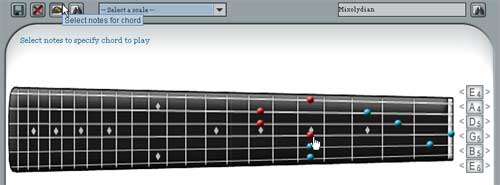
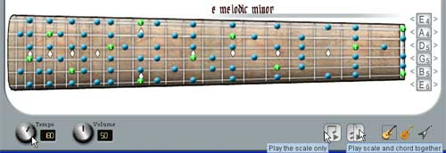

Links
About Guitar Scale Assistant
Getting Started
Using the Clickable Fretboard
Searching for Scales
Viewing Scales
Using the Tuners
Using the Audio Interface
Using the Audio Interface

Fig. 7 Selecting chords
By clicking the "Select notes for chord" button (shown above), you enter a note selection mode. While in this mode, the pointer cursor will be replaced by a hand cursor. You can then continue to select notes on the clickable fretboard by left-clicking on notes, which will highlight the notes in red. You can de-select notes by right-clicking on them. The selected notes will represent what chord you want to hear when you play the scale and chord together. (Note: a chord will be played by itself if no scale is selected or the bottom display fretboard is cleared).

Fig. 8 The audio interface
You can control the tempo and volume of the player by clicking and dragging the tempo/ volume knobs to the left or right. To play a scale by itself, pick the scale you want to hear using the methods outlined in the "Viewing Scales" section, and click the "Play scale only" button shown above. The scale will be played once through from the lowest note to the highest note on the display fretboard. To play a scale and chord together, click the "Play scale and chord together" button. The selected scale will be played along with the chord highlighted on the clickable fretboard (played every 4th note).
You can select to hear the scales and chords through an acoustic guitar, jazz guitar, or distorted electric guitar by clicking the different guitar icons in the lower left portion of the window.
< Prev